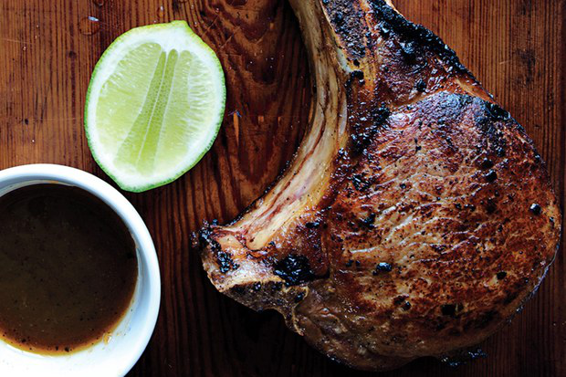

Vietnamese Pork Chop

Ingredients
1
Small Shallot
finely chopped
1/3 cup
Light Brown Sugar
1/4 cup
Fish Sauce
2 tbsp
Rice Vinegar
1 tsp
Freshly Ground Black Pepper
4
Thick-Cut Bone-In Pork Chops
1 tbsp
Vegetable Oil
Salt
Lime
halved (for serving)
Utensils
Steps
1. Marinade
20 min
Whisk shallot, brown sugar, fish sauce, vinegar, and pepper in a shallow dish.
Using a fork, pierce pork chops all over and add to marinade, turning to coat.
Cover and let pork chops marinate at room temperature, turning occasionally,
20 minutes
.
2. Cook Pork Chop
20 min
Remove pork chops from marinade, scraping off excess.
Heat oil in a large skillet over
medium-high heat
.
Lightly season pork chops with salt.
Cook until browned and cooked through, about
4 minutes
per side.
Let pork chops rest
10 minutes
before serving.
Bring marinade to a boil in a small saucepan and cook until reduced to 1/4 cup, about
4 minutes
.
Serve pork chopswith reduced marinade and lime halves.